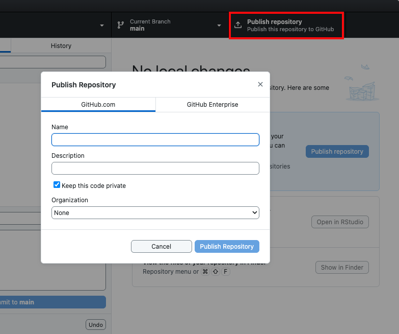
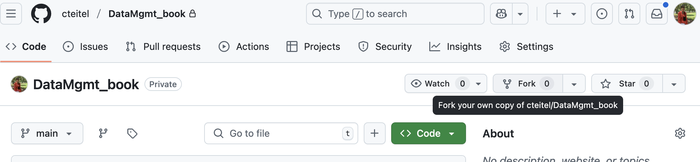

15 Syncing and collaborating using GitHub
15.1 Objectives
- Clone and fork repositories from GitHub
- Understand merge conflicts, how to resolve them, and how to avoid them
- Work with branches in repositories
15.2 Collaboration on code
In the previous lesson, we learned how to manage your own code using version control. This is probably the bulk of what you will you do with version control. However, many of the benefits of using version control magnify when collaborating with others on code. For example:
- Code often builds on itself, so a single small change can change an entire workflow (or break a script).
- Unlike in word processing programs, there is limited opportunity for “track changes” in code.
- A section of code usually depends on what comes before it, so it isn’t usually feasible for collaborators to write code chunks separately and combine them later.
Much rest of this lesson is copied, with minimal editing to images and links, from materials for WILD 6900: Tools for Reproducible Science, Spring 2021, Utah State University, by Dr. Simona Picardi, published under a CC-BY 4.0 license.
15.3 Adding a remote repository (sending your code to GitHub)
A remote repository is a copy of a repository that is stored elsewhere than your local copy. In most cases, when collaborating, you’ll have a copy of a repository on your machine (the local repository) and a copy on a server that is accessible to others (the remote repository). The remote repository can be hosted on GitHub.
There are two ways to set up your local and remote repositories to interact.
- Set up the local first and link it with a remote later.
- Create the remote first and “clone it” on your computer to get a local copy (see below).
If you’re starting a brand new repository you can go either way, but the first approach is what you would do if you wanted to link a repository that already exists on your local machine to a GitHub repository.
15.3.1 Using GitHub Desktop
GitHub Desktop makes this process easy! The “publish repository” button allows you to begin syncing your commits with GitHub. I recommend giving it the same name as the folder on your computer (this isn’t necessary, but is helpful). You can also link it to a group that you’re part of or choose to make your repository public.

Figure 2.1: Merge conflict in this R Markdown document
15.4 Cloning (adding a GitHub repository to your computer)
The other way to get a local-remote repository pair set up is to cone a GitHub repository to your computer. You could do this before starting a project, with an empty repository, or to collaborate on a shared repository. You and your collaborator/s can all have a copy of the same repository on each of your computers by cloning a shared remote repository, which will then be synchronized with changes made by anyone on the team. The person who created the repository will need to add the others as collaborators so that they’re able to clone it.
15.6 Forking a repository
Forking a repository means creating a copy of an existing repository where you can make changes without affecting the original repository. You can technically fork your own repository, but forking is mostly used to get a copy of somebody else’s repository. For example, if you want to contribute to a project that was created by a person you don’t know, or if you want to build off of their code because it does something similar to what you need to do, you can fork their repository and work on it without their copy being affected.
The cool thing about forking is that, if the owner makes changes to their repository, you can pull those changes to your fork so that your copy of the repository stays in sync with the original. Also, you can contribute your own changes by submitting them to the original repository through pull requests. This is the main difference between forking and cloning somebody else’s repository: by cloning, you won’t be able to update your copy to include new changes made in the original and you won’t be able to contribute back unless you’re added as a collaborator.
Unlike all the other functionalities we have seen so far, which are Git commands, forking is a GitHub functionality. There is no built-in Git function to fork a repository from the command line. To fork a repository, go to the web page of that repository and click “Fork” in the top-right corner. This will create a copy of the repository on your GitHub account.

Figure 15.1: Fork GitHub repository
The repository is now in your GitHub account. If you also want a local copy of this repository on your computer, you can clone your fork, just like you did above.
You won’t be able to push changes to the original repository because you do not have collaborator privileges, but you can push changes to your copy.
15.7 Pull requests
Pull requests are the way to ask that the edits you made in a fork (or a branch) get merged into the original repository (or main branch). To ask the owner of a repository to view and potentially integrate the changes you made in your own forked version, you submit a pull request. Similarly, to let your collaborators know about the edits you made and let them review them before they get merged, you submit a pull request. There is a key difference here: while as an external agent you have no other choice but submitting a pull request to merge a fork into a repository, as a collaborator you could simply merge your edits if you wanted to. If you are working on your own repository by yourself, there is no need to go through pull requests to merge a branch. But if you are collaborating with people, it is still good and courteous practice to use pull requests as a heads-up before you merge your changes, so that others on the project can review and approve them.
The most straightforward way to submit a pull request is from the GitHub website. To start a pull request, you must have some changes committed to the repository or branch where you want to merge them. Then you can go to the repository page on GitHub and click on the ‘Pull requests’ tab, then click ‘New pull request’. Choose your target branch, enter a title and description, and then click ‘Send pull request’. Once the pull request is open, everyone can write comments on it, see all the commits it includes, and look at the changes it proposes within files.
Once everyone is happy with the proposed changes, you are ready to merge the pull request. If there are no merge conflicts, you will see a ‘Merge pull request’ button.
15.8 References
- GitHub Community Forum: https://github.community/